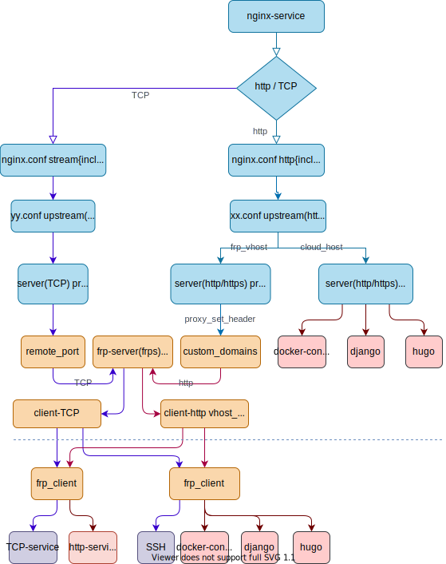

内网穿透介绍
通常除了公司干活的企业服务器环境, 很多人都会在自己的闲置电脑或者老机器上搭建很多有意思的实验性服务练练手, 但是因为网络原因也只能在家里访问, 使用上还是很不方便的, 网上有很多 DDNS和 内网穿透的玩法和教程, 这里我也分享一种利用 nginx + frp 将内网服务部署到公网的操作方法, frp 提供穿透 NAT和防火墙的网络能力, 而 nginx 对 web 服务代理可以实现灵活的服务管理, 这种思路可以有很多其他玩法, 这里只是其中一种实践演示, 仅供大家参考.
假设你已经了解基础的网络知识, 并且指导典型的web服务的搭建, 这里分享的是我们要怎么做把自己在内网环境的服务部署(转发)到公网上.
这里的云主机是一台具有公网IP的Linux设备或者云服务器, 方案是将本地的服务通过 frp 透转发到云主机进行内网穿透, 云主机上当然也可以部署服务, 不过为了节省资源这里云主机只有很少量服务, 主要还是用来运行 nginx 作为前端代理服务, 如果有ssl证书也可以在nginx代理层进行配置, 这样站点就可以支持https了.
先来一张整体的服务架构图: 
一般代理服务都会根据后端的服务协议类型对应进行有区分的配置, 这里 nginx 主要代理四层 TCP/UDP 和七层的 http 协议的服务为主, 这里以 nginx 和 web 服务为例子进行分享, 如果你熟悉其他代理软件(比如HAproxy)也可以将 nginx 换成别的你更顺手的工具.
其实这种方案除了基础设施部分灵活性不足, 对于软件服务的注册,部署和更新等等, 这些动作都是可以通过 CI/CD 流水线完成自动化配置的, 但是我们这里先介绍一遍手动配置的基本流程.
step 1. 准备公网IP
将内网服务部署到互联网,你需要有一台具备公网IP的主机, 不然外部是无法穿透NAT设备与防火墙访问到你的, 这里有两种常见的解决方案可选:
- 你可以购买一台云主机, 云主机都会附送公网IP, 如果带宽不够还可以另外购买弹性公网IP.
多留意促销折扣云主机还是可以买的, 要是不差钱还喜欢折腾的还可以选多家云服务商各买一台(或几台)搞个多云灾备那就更安全了, 甚至支撑一些小流量的对公服务(比如搭一个小团队自己的分布式服务环境)也就可以嗨起来了.
-
如果你不想购买云主机, 你可以试着向你家的宽带运营商(比如移动宽带, 一般打客服电话办理即可)申请固定公网IP, 不过有些地区的运营商并不提供固定IP, 这时候就只能买云主机了.
-
如果购买了云主机千万记得安全问题一定要做到位, 配置 ssh 等服务使用更加严格的访问控制, 限制连接数, 限制重试次数, 自动断开等等, 最好是仅允许密钥进行远程登录并配置允许访问的白名单, 关闭所有不必要的服务和端口的安全组, 系统用户也务必使用强密码以防万一.
-
本地服务也要加强安全防护, 后续暴露到公网的本地服务安全策略不要太大意, 对于安全问题原则上宁可信其有不可信其无.
step 2. 准备域名(可选)
其实有公网IP已经可以达到暴露服务到公网访问的目的了, 只是使用域名会更加方便, 不然服务不方便被搜索引擎检索, 除了你自己别人一般都是看不到的, 每次都打IP才能访问不够方便, 来来回回记数字分享起来也怪麻烦的.
如果没有域名的情况下, 除了访问的问题, 有些本地服务的配置也需要跟你的固定IP地址绑定上, 如果IP是发生变动了(比如搬家,换网)配置就也全部要重新改动, 架构灵活性鲁棒性都太差, 如果有域名这个问题就可以通过修改DNS记录来搞定, 使用和配置上都方便很多.
有了域名, 把域名解析到你的固定公网IP上, 就可以通过域名来访问站点了, 一般购买域名通常都是赠送域名解析服务的, 只是国内的域名通常需要备案, 如果购买了云主机通常云服务商也会提供代理备案服务, 填写个人资料然后等待客服核实, 最后再等待N个工作日就完成备案了.
后面的例子里面用到的域名我都已经配置解析到我的阿里云主机上了, 因此配置文件里面就不用写IP地址了.
step 3. 部署配置 nginx
nginx 的部署就不讲了, 直接看看配置吧.
主配置文件
/etc/nginx/nginx.conf
user nginx;
worker_processes auto;
error_log /var/log/nginx/error.log;
pid /run/nginx.pid;
include /usr/share/nginx/modules/*.conf;
events {
worker_connections 1024;
}
stream {
include /etc/nginx/tcp.d/*.conf;
}
http {
log_format main '$remote_addr - $remote_user [$time_local] "$request" '
'$status $body_bytes_sent "$http_referer" '
'"$http_user_agent" "$http_x_forwarded_for"';
access_log /var/log/nginx/access.log main;
sendfile on;
tcp_nopush on;
tcp_nodelay on;
keepalive_timeout 65;
types_hash_max_size 2048;
include /etc/nginx/mime.types;
default_type application/octet-stream;
# Load modular configuration files from the /etc/nginx/conf.d directory.
# See http://nginx.org/en/docs/ngx_core_module.html#include
# for more information.
include /etc/nginx/conf.d/*.conf;
}
这里注释了 http 段落里面默认的虚拟主机, 增加了配置文件目录 /etc/nginx/tcp.d/, 然后再将其引入到主配置文件的 stream 段落方便管理TCP的代理服务.
TCP配置文件
一个简单的tcp配置示例:
/etc/nginx/tcp.d/frp.conf
###############
# win10 test
###############
upstream frps3_msts_win10_work_vm {
server localhost:1003 fail_timeout=0;
}
server {
listen 2003;
proxy_pass frps3_msts_win10_work_vm;
proxy_connect_timeout 5s;
proxy_timeout 1h;
}
当然在frp服务配置妥当之前这个配置是不会生效的, 不过你可以先写个模板检查一下语法是否正确方便后续套用.
虚拟主机配置文件
虚拟主机配置示例:
/etc/nginx/conf.d/musicgeek-frpweb.conf
##################################################
# web service (frp: http/https) 1080/1043
##################################################
upstream frps_http {
server localhost:1080 fail_timeout=0;
}
upstream frps_https {
server localhost:1043 fail_timeout=0;
}
#########################
# respberryPi: zero-w
#########################
server {
listen 80;
server_name www.musicgeek.club;
server_tokens off;
server_name_in_redirect off;
location / {
proxy_hide_header X-Powered-By;
proxy_set_header Host www.musicgeek.club:$server_port;
proxy_set_header X-Forwarded-For $proxy_add_x_forwarded_for;
proxy_set_header X-Real-IP $remote_addr;
proxy_pass http://frps_http;
client_max_body_size 10m;
}
}
Step 4. 配置 frp 服务端 frps
打开 frps release 然后根据你的操作系统下载合适的版本.
关于部署, 项目主页有详细的配置指南, 并且还附带了Linux systemd 服务模板.
总体步骤如下:
- 下载 发行版压缩包
- 解压 压缩包
- 拷贝可执行文件到执行文件目录
- 服务端: frps / frps.exe
- 客户端: frpc / frpc.exe
- 执行文件目录(可以修改环境变量配置):
- Linux: /bin/ 或者 /usr/bin/
- Win: C:\Windows\ (windows不太熟悉, 这个路径一般都可以用)
- 创建配置文件目录, 比如:
- Linux, /etc/frp/
- Win, C:\frp\
- 复制模板配置文件
- 编辑配置文件
- 试运行服务
- 配置后台运行, 复制systemd服务模板到默认服务目录, (windows需要添加后台运行bat脚本)
- 配置 logrotate 日志转储 (windows日志转储不太熟悉)
- 配置并检查 frps/frpc 服务的开机启动
直接给个配置文件示例吧
/etc/frp/frps.ini
[common]
bind_port = 1000
vhost_http_port = 1080
vhost_https_port = 1043
privilege_token = YourPassword!
use_encryption = true
use_compression = true
proxy_bind_addr=127.0.0.1
log_file = /var/log/frps.log
log_max_days = 3
这里端口是乱写的, “YourPassword!“你要换成自己的密码, 建议设置一个强密.
示例的绑定IP被设置成了回环地址, 因此注册到 frp 服务端的客户端服务并不直接暴露, 还需要经过 nginx 才能被访问.
部署完成服务端后就可以准备客户端了.
Step 5. 配置 frp 客户端 frpc
frpc 的部署也是参考官方文档即可, 还是直接给出配置示例吧:
/etc/frp/frpc.ini
[common]
server_addr = www.iterdaily.com
server_port = 1000
privilege_token = YourPassword!
use_encryption = true
use_compression = true
log_file = /var/log/frpc.log
[ssh_vm1]
type = tcp
local_ip = 127.0.0.1
local_port = 22
remote_port = 1022
[web_pipe1]
type = http
local_port = 80
custom_domains = www.musicgeek.club
这里的端口和密码我随便写的,记得改成你自己的.
windows 开机启动运行脚本和自动运行方法:
地址栏输入:
# 某个用户的开机启动项配置路径
C:\Users\你的账户名\AppData\Roaming\Microsoft\Windows\Start Menu\Programs\Startup
或者
#系统开机启动路径:
C:\ProgramData\Microsoft\Windows\Start Menu\Programs\StartUp
前者是针对某个账户的开机启动，账户默认是Administrator，后者是针对所有账户的启动
开机启动脚本示例:
C:\ProgramData\Microsoft\Windows\Start Menu\Programs\StartUp\frpc.vbs
set ws=WScript.CreateObject("WScript.Shell")
ws.Run "C:\frp_0.34.2_windows_amd64\frpc.exe -c C:\frp_0.34.2_windows_amd64\frpc.ini",0
因为熟悉Windows服务配置, 这个例子并不是配置了开机启动服务, 而是开机运行了脚本, 这种使用脚本的开机启动配置的方法其实很不优雅, 在实际使用上必须某个用户登录到系统里面开机脚本才会运行, 因为实在很少用, 也就懒得折腾Windows的服务配置了.
到这里基本配置就完成了, 后续就可以按照相同的方式去添加更多的内网服务了.
学会一样东西最好的方法就是实践起来. 动手试一试吧.